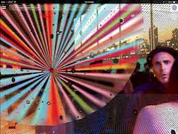

Will Pappenheimer
Proxy, 5-WM2A
2014

Proxy, 5-WM2A is a project which layers hallucinatory elements with your physical location through digital effects. The project aims to create its own drug induced experience.This digital artwork actually becomes part of the physical environment.